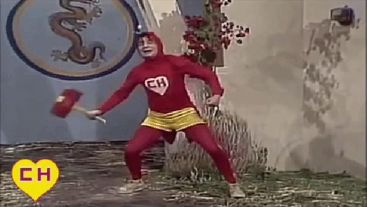
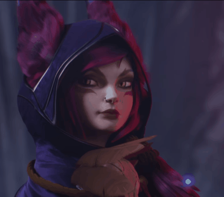
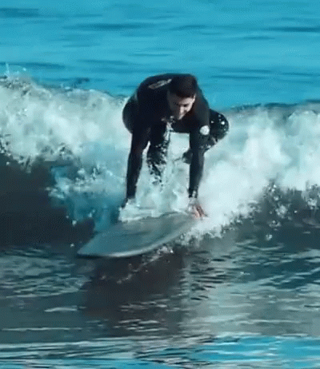

Apresentação

Me chamo Daniel Dantas, tenho 24 anos sou estudante de Ciências Computação pela Faculdade Descomplica, estagiário como Desenvolvedor Full-Stack pela Buser, no projeto do BuserTech , após ter cursado 2 anos de Licenciatura em Matematica e estagiado no Colegio Marista Arquidiocesano como professor auxiliar, aprendi metodos para ensinar as outras pessoas e conseguir ajudar elas, além de aprender a aprender sozinho.
Soft Skills
-
Adaptabilidade:
Essa é uma das minha Soft Skills que considero mais importante, pois consigo me adaptar facilmente a novas necessidades no trabalho e sempre busco me reinventar para continuar me adaptando e evoluindo.

-
Calma:
Algo que costumo ouvir muito, que sou muito paciente e calmo, e com isso consigo resolver conflitos e até mesmo buscar soluções para situações complexas.

-
Liderença:
Essa soft skill foi desenvolvida principalmente durante a pandemia, consigo motivar e fazer com que grupos conquistem os objetivos alçados.

Hards Skills

-
CSS/HTML
Aquele conhecimento que todo buserteco tem e pouco mais, se não precisar de Java eu resolvo.
-
Banco de Dados:
Após anos de experiencia com Excel, isso aqui parece muito facil, mas não é, se precisar localizar um dado no seu banco de dados, eu te ajudo.
-
Python
Aprendi Python em 1 hora, Já programei em C no meu curso de mecatronica sou bem proativo em resolver problemas então se tiver no Google, eu vou da um jeito. -
Google
Como assim Google ? Isso mesmo meu consagrado, sei usar isso para buscar soluções para os meus problemas.
e dos outros também
Um pouco mais do Daniel
-

Jogos Online
Tenho o costume de na minha hora de lazer jogar os jogos online atualmente, ando jogando mais Tibia e League of Legends.
 -

Esportes
Desde pequeno eu já estava na praia com meu pai, então comecei muito cedo a surfar, sempre joguei futebol, gosto de natação, basquete e qualquer esporte que envolva competitividade e adrenalina